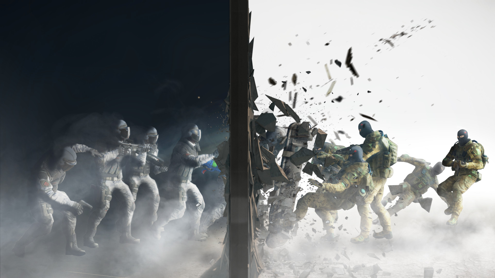

Gameplay Overview

What does Rainbow Six Siege look like?
It is a first person shooter game. It is very realistic with the movements of characters, walls and object movements and much more.
How do you play Rainbow Six Siege?
You can play the game using many different methods. Like using the PlayStation 4, Xbox One, PlayStation 5 and Xbox Series X. You can play it on PC as well, like on Steam but it is only available on Microsoft Windows and not MacOs.
How does Rainbow Six Siege work?

When the round begins in an online match, the attackers choose one of several spawn points from which to launch their attack while defenders do the same from which to defend from. A one-minute preparatory period will then commence wherein the attackers are then given control over mecanum-wheeled drones to scout the map in search of enemy operators, traps and defensive set-ups in addition to the target objective(s), while the opposition establishes their defences and tries to do so without having the defensive and target objective(s) details being discovered, chiefly through destroying the drones. Maps in the game are designed to encourage close quarters combat, and players cannot respawn until the end of a round. Players who were killed by opponents can enter "Support Mode", which allows them to gain access to drone's cameras and security cameras so that they can continue to contribute to their team by informing them of opponent locations and activities. Matches last only four minutes for a casual and three minutes for a ranked.
The game features a heavy emphasis on environmental destruction using a procedural destruction system. Players can break structures by planting explosives on them, or shoot walls to make bullet holes. Players may gain tactical advantages through environmental destruction, and the system aims at encouraging players to utilize creativity and strategy. A bullet-penetration system is featured, in which bullets that pass through structures deal less damage to enemies. In addition to destruction, players on the defending team can also set up a limited number of heavy-duty fortifications on walls and deployable shields around them for protection; these can be destroyed through breaching devices, explosives, or by utilizing operator specific gadgets in the case of the former. In order to stop attackers' advance, defenders can place traps like barbed-wire and explosive laser wire traps around the maps.